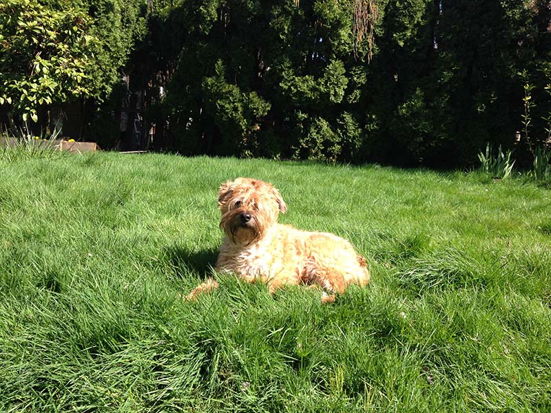
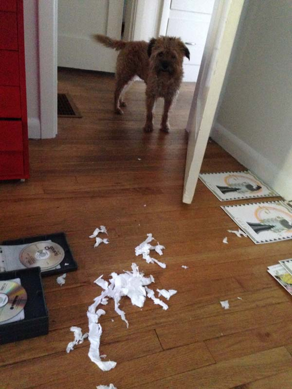
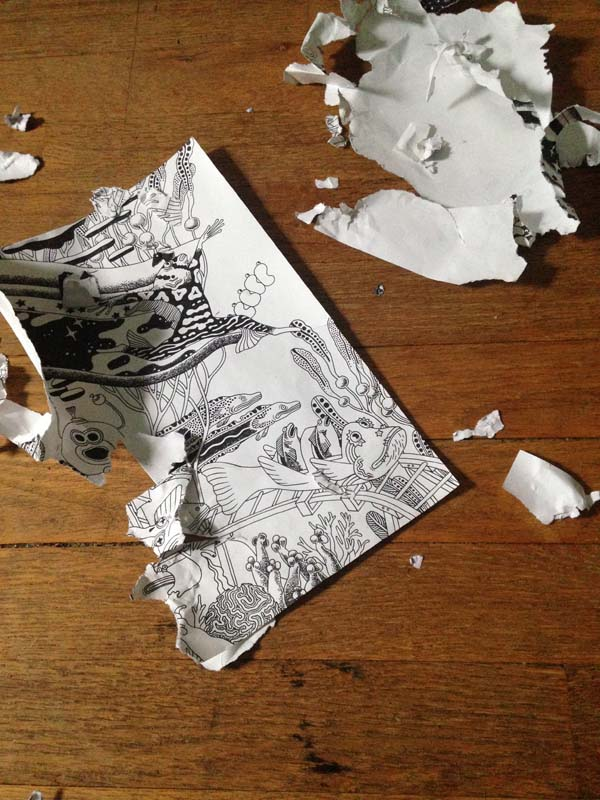
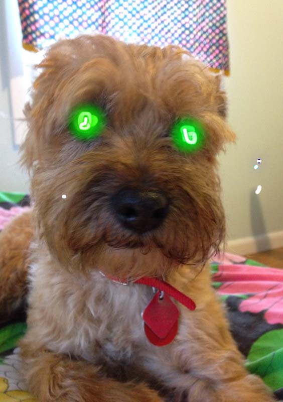
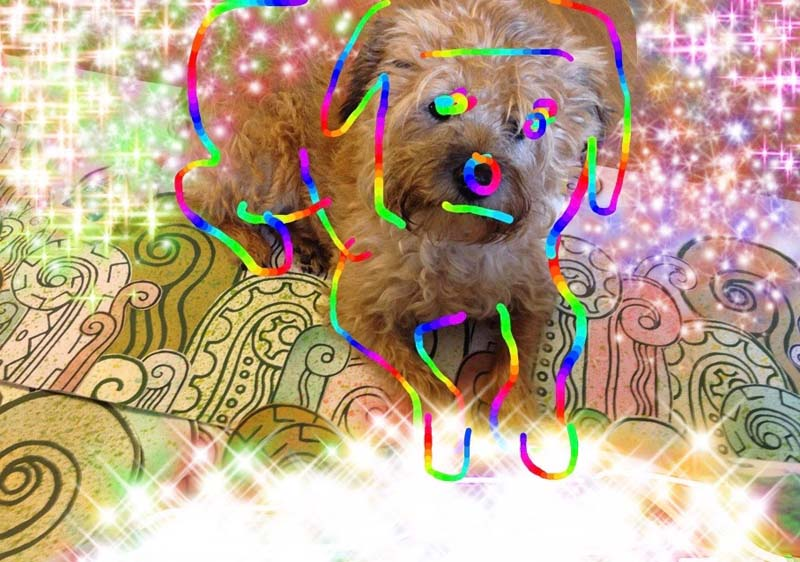
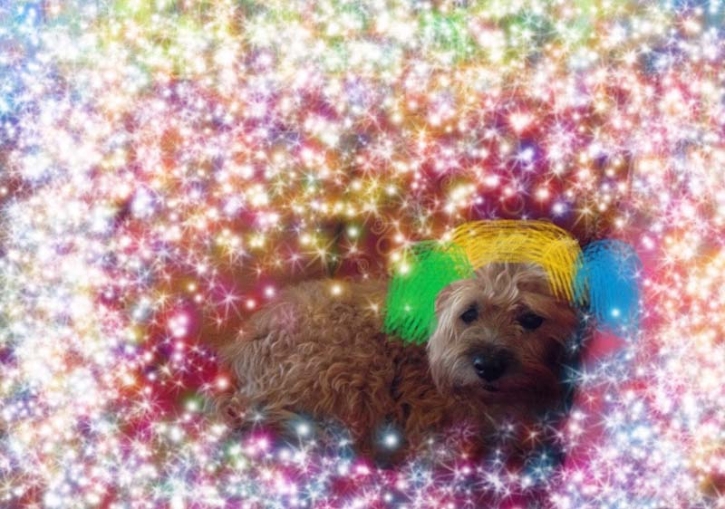

they say i am a dog
ok, whatever.
here's what looked like before i went bald

I express myself by altering the material world around me

my transformative work is important to me

my human does not always appreciate my work
my human doesn't understand that I am a powerful wizard



here are some things I like:
- sleeping
- eating sometimes, only if its good though
- causing a ruckus, making noise, and breaking things
here are things I don't like:
- getting stuck behind furniture or under stairs
- taking a shower
- when my human leaves the house